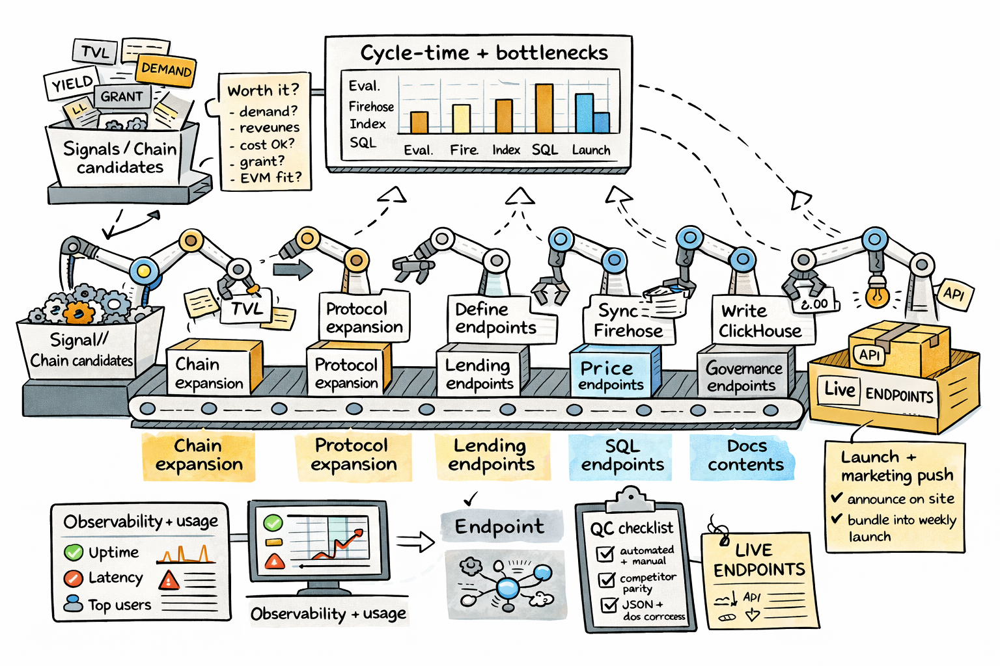

Our objective: Start measuring then optimizing how long it takes us to go from syncing a new chain to serving new endpoints

| Competitor | Gap |
|---|---|
| DefiLlama | Covers 22% of our planned fields. Zero curator data. Hourly updates. |
| Amberdata | Doesn’t cover Morpho, Euler, or Base. |
| yield.xyz | No borrow-side data, no utilization, no LTV. |
| vaults.fyi | No real-time. ZyFAI said “doesn’t integrate everything correctly.” |
| Euler borrow data | DefiLlama has 0 pools. We’d be the only source. |
Our edge: Independent APY calculation, 15-30 min refresh, curator-level aggregation, borrow-side data, pool-level granularity.
| Protocol | Ethereum | Base | Arbitrum |
|---|---|---|---|
| Morpho | $2.88B | $2.14B | $229M |
| Aave V3 | ~$10B+ | $1.37B | ~$2B+ |
| Euler V2 | $413M | $6M | $24M |
The following slides share numbers we were able to measure across our current processes. The goal is to understand where we are today so we can identify what to improve and track progress over time.
“You can’t improve what you don’t measure.”
(at the current pace) Will take ~100+ days
Sync progress
Base chosen because all 3 target protocols (Morpho, Aave V3, Euler V2) are deployed there. $5.6B yield TVL, 1,266 pools. 3 of 5 initial customers need Base first.
Ethereum & Arbitrum should be much easier — because they have less blocks and less transactions per block so it is much faster to sync.
Spec process is iterative — research and drafting bounce back and forth through peer review with key stakeholders.
Pinax issues delaying data ingestion from Firehose. Scripts ready to build materializations once data lands.
Production deploy should be straightforward once beta is validated (per Justin).
Now that we have context on where we are, let’s discuss the endpoint release process and align on action items.
We need to define this together. Proposed flow:
Start generating staging docs from beta endpoints' OpenAPI JSON.
Better docs requires better OpenAPI JSON schemas. Who owns this?
Deploy QC agent for beta endpoints. Automated quality checks before production.
Is our current monitoring ready for production with paid customers?
| Action | Status |
|---|---|
| Everyone: update GitHub issues so we can measure how long each step takes | Start now |
| Retro after lending endpoints are shipped — understand what we can do better | After ship |
| Improve infrastructure performance (Firehose sync speed) | In progress |
| Start identifying things we can automate: | |
| QC agent to start solving issues, not just flagging them | Explore |
| Research automation | WIP |
| Generate better OpenAPI JSON schemas | Explore |
| Improve performance of queries that trigger errors (waiting for unification) | Ricky WIP |
| Carlos & Pedro: staging docs generation based on beta endpoints | Start now |